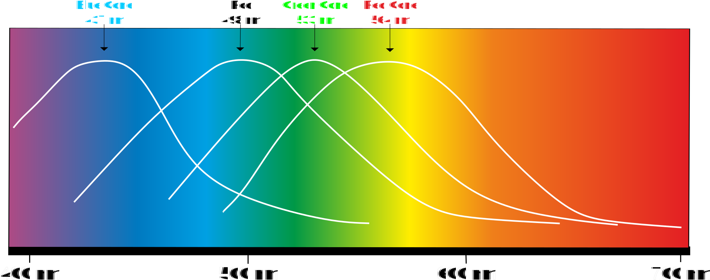
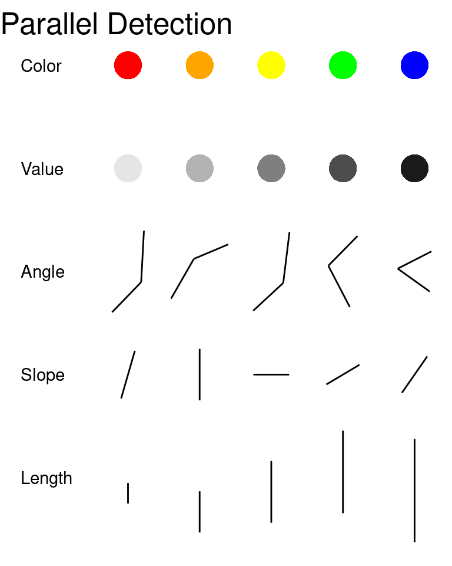
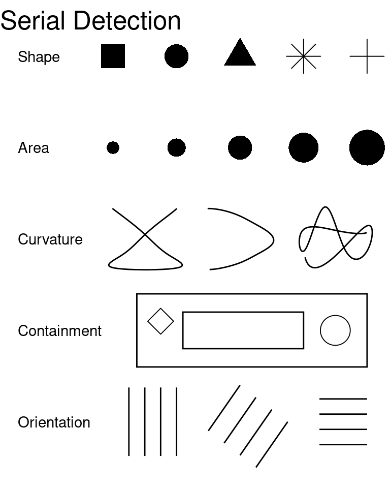
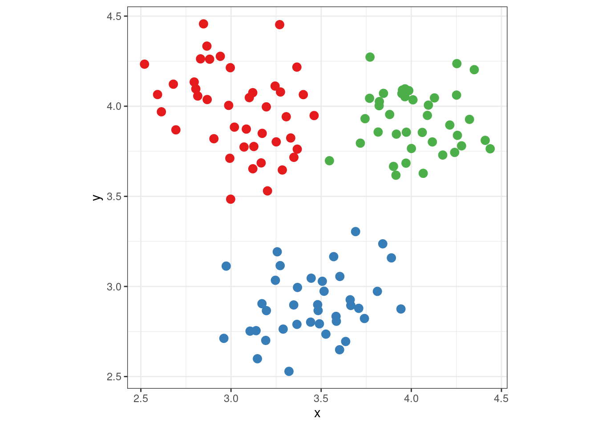

Fundamentals of Graphical Communication
A Quick Introduction to Perception and Cognition
In order to design graphics for the human perceptual system, we must understand, at a basic level, the makeup of the perceptual system. There are multiple levels of perception that must correctly function in order to perceive visual stimuli successfully, but a somewhat simplistic higher-level analogy would be that we must understand both the hardware and software of the human visual system to create effective graphics.
The “hardware”, in this analogy, consists of the neurons that make up the eyes, optic nerve, and the brain itself. The higher-level functions (object recognition, working memory, etc.) comprise the “software” component. In addition, much like computer software, there are different programs running simultaneously; these programs may interact with each other, run sequentially, or run in parallel. Here, we provide an overview of the important components of the visual system that influence graphical perception. First, we discuss the grey-matter (hardware) components of the visual system, then we examine the higher-level cognitive heuristics (software) that order the raw input and construct our visual environment.
Hardware
The physiology of perception is complex; what follows is a brief overview of the physiology of perception, focusing on the areas most important to the perception of statistical graphics. It is important to distinguish between the sensation (the retinal image) and the perception (the corresponding mental representation) of an object. This overview will entirely ignore the finer details of the organization of the brain: feature detector cells, specific processing units for certain types of visual stimuli, and most of the experiments and incidents that led to our current understanding of how the brain processes visual information. A more thorough presentation of these aspects of perception can be found in Goldstein and Cacciamani (2022).
The Eye
The eye is a complex apparatus, but for our purposes, the most important component of the eye is the retina, which contains the sensory cells responsible for transforming light waves into electrical information in the form of neural signals. These sensory cells are specialized neurons, known as rods and cones, which perceive light intensity (brightness) and wavelength (color), respectively. One section of the retina, known as the fovea, contains only cones; the rest of the retina contains a mixture of rods and cones. Figure 1 depicts the structure of the eye with a closeup of the retina.

{kind=link}
Another important region of the retina is the blindspot, the area where the optic nerve exits the eye to connect the retina to the brain. There are no rods or cones in this region of the retina, and any vision in the region of space that maps onto this point is a result of two mechanisms: binocular vision (the other eye fills in the missing information) and your brain “filling in” what it believes should be there.

{kind=link}
Figure 2 shows the responsiveness of rods and each of the three types of cones to wavelengths of light in the visual spectrum. As a result of the response of cone cells to different wavelengths of light, humans with normal color vision can better distinguish colors in the yellow-green portion of the color spectrum compared to colors in the red or blue portions of the spectrum.
Implications for Color Schemes
Rainbow-style color schemes are seldom appropriate for conveying numerical values, because the correspondence between perceived information and the displayed information is not accurately maintained by the visual system (Golebiowska and Coltekin 2022; Liu and Heer 2018; Borland and Taylor 2007; Light and Bartlein 2004). Rainbow schemes may perform slightly better in situations where the goal is to emphasize distributions of values (Reda 2022), but this effect is small relative to the disadvantages of rainbow color schemes for accessibility and interpretability.
Moreover, if a viewer has any level of color vision impairment (colloquially, ‘color blindness’), the viewer cannot perceive the full spectrum of colors. An estimated 5% of the population (10% of males, less than 1% of females) has some form of color vision impairment. Rainbow color schemes perform particularly poorly when color vision is impaired.
The Brain
Once light hits the retina and causes a signal in the receptor cells, the information travels along the optic nerve and into the brain. Multiple neighboring rods are connected to the same neuron, where each cone is connected to a single neuron. The combined wiring of rod cells is responsible for the Hermann grid illusion and the Mach bands seen in Figure 3. Both of these illusions are a product of lateral inhibition, which is a result of the wiring of rod cells in the retina. Essentially, neurons can only fire at a specific rate, so when neighboring cells are all stimulated simultaneously, the combined neuron cannot fire fast enough to pass on all of the signals, causing inhibition. The specifics of this response and its relationship with the wiring of the receptor cells are too complex for this summary.

{kind=link}

{kind=link}
Once neural impulses have left the retina through the optic nerve, they travel to the visual cortex by way of several specialized structures within the brain that process lower-level signals. Receptor cells in the visual cortex respond to specific angles, spatial locations, colors, and intensities, and arrays of these special ‘feature detector cells’ process the information into a form used by higher-level processes (Hubel and Wiesel 1962). These higher-level processes are what we have previously called ‘software’: they are not directly related to the physical brain, but they do process information heuristically to produce higher-level reasoning and conclusions. In the next section, we explore some of the higher-level processes responsible for visual perception.
Software
Many of the processes for visual perception run simultaneously; in absence of a strict temporal ordering, we will start with the more basic tasks of visual perception and proceed towards higher-level processes.
Selective Attention
In many tasks, it is necessary to pay attention to many parallel input streams simultaneously; this is particularly true for complex tasks like driving a car. These tasks demand divided attention; the brain must process many different sources of information in parallel. By contrast, most image recognition tasks require selective attention, that is, focusing on specific objects and ignoring everything else.
Selective attention is accomplished by focusing the fovea (the area with the highest visual acuity) on the object. For instance, if the object is a page of text, each word will pass through the fovea, producing a focused stream of visual input. This stream of input consists of saccades (jumps between points of focus) and pauses in which the visual information is relayed to the brain.
Selective attention is generally necessary for perception to occur, though there is some information that is encoded automatically. The “gorilla” film experiment demonstrates that even when there is attention focused on a task, information extraneous to that task is not always encoded, that is, when participants focused on counting the number of passes between players in the basketball game, many did not notice the gorilla walking through the middle of the court. It is important to understand which parts of a visual stimulus are the focus of a given perceptual task, because most of the information encoded by the brain is a result of selective attention. Eye-tracking can be an important tool useful to understand these perceptual processes, but participants may also be able to self-report which parts of a stimulus contributed to their decision.
Within the brain, attention is important because it allows different regions of the brain which process color, shape, and position to integrate these perceptions into a multifaceted mental representation of the object (Goldstein and Cacciamani 2022). This process, known as binding, is essential to coherently encode a scene into working memory. Feature integration theory (Treisman 1980) suggests that these separate streams of information are initially encoded in the preattentive stage of object perception; focusing on the object triggers the binding of these separate streams into a single coherent stream of information. Many single features, such as color, length, and texture are preattentive, because they can be pinpointed in an image without focused attention (and thus can be located faster), but specific combinations of color and shape require attention (because the features must be bound together) and are thus more difficult to search. Preattentive features are generally processed in parallel (that is, the entire scene is processed nearly simultaneously), while features requiring attention are processed serially.


Examples of features processed serially and in parallel are shown in Figure 4 [Helander, Landauer, and Prabhu (1997); Chapter 6].
Feature integration as a result of attention enables the brain to process a figure holistically and integrate all of the separate aspects of the object into a single perceptual experience. This processing is important for the most basic visual processes we take for granted, including object perception.
Object Perception
The most basic task of the visual system is to perceive objects in the world around us. This is an inherently difficult task, however, because the retina is a flat, two-dimensional surface responsible for conveying a three-dimensional visual scene. This dimensional reduction means that there are multiple three-dimensional stimuli that can produce the same visual image on the retina. This is known as the inverse projection problem - an infinite number of three-dimensional objects produce the same two-dimensional image. Less relevant to statistical graphics, but still complicating the object perception process, a single object can be viewed from a multitude of angles, in many different situations which may affect the retinal image (lighting, partial obstruction, etc). In addition, we recognize objects even when they are partially obscured or viewed from an angle we have not previously seen. These problems mean that the brain must utilize many different heuristics to increase the accuracy of the perceived world relative to an ambiguous stimulus.
The most commonly cited set of heuristics for object perception (and the set most relevant to statistical graphics) arise from the Gestalt school of psychology and are known as the Principles of Grouping. These principles relate to the idea ``the whole is greater than the sum of the parts’’, that is, that the components of a visual stimulus, when combined, create something that is more meaningful than the separate components considered individually. The Gestalt principles of grouping are as follows:
- Pragnanz (the law of closure) Every stimulus pattern is seen so that the resulting structure is as simple as possible.
- Proximity Things that are close in space appear to be grouped.
- Similarity Similar items appear to be grouped together. The law of similarity is usually subordinate to the law of proximity.
- Good Continuation Points that can be connected to form straight lines or smooth curves seem to belong together, and lines seem to follow the smoothest path.
- Common Fate Things moving in the same direction are part of a single group.
- Familiarity Things are more likely to form groups if the groups are familiar.
- Common Region Things that are in the same region (container) appear to be grouped together
- Uniform Connectedness A connected region of objects is perceived as a single unit.
- Synchrony Events occurring at the same time will be perceived as belonging together.
These principles are demonstrated in Figure 5.

Memory
Miller (1956) suggested that active memory can contain only 7 (plus or minus two) chunks of information. A chunk of information could be a single letter or number, a meaningful collection of several letters or numbers (e.g. a word or an area code), or an association. This limitation is important in designing information for graphical consumption. For instance, the number of categories in legends should be limited to 7, to allow a viewer to store the associations within the legend and then use that information to understand the graph. Abuse of this limitation is referred to as a “color mapping attack” in Conti, Ahamad, and Stasko (2005), a paper detailing the various ways to “attack” a human visualization system. Similarly, viewers should not be expected to remember more than 7 “chunks” of information from a single graph. Due to these limitations in memory, when a single color scale is used to represent more than one order of magnitude of variation, using a logarithmic scale provides more optimal information scaling than using a linear color scale (Sun et al. 2012; Varshney and Sun 2013).
Information Integration
Integrating multiple dimensions of information (or mentally combining multiple graphics) is another area which can strain the ability of the brain to utilize information effectively. Well-constructed graphs can help the brain to integrate information by connecting points across dimensions (through the use of regression lines, clustering, etc.), which creates “chunks” of information that can then be stored in memory in a more compressed format. Gestalt principles of grouping are useful heuristics in part because they help define how these chunks of information form. In chart design, creating chunks of information is useful because this allows people to draw conclusions from multiple sets of data across multiple dimensions (Gattis and Holyoak 1996). Poorly created graphics may make this task harder or even promote the encoding of misleading chunks; for instance, data that is overplotted may obscure the important trend and may also produce chunks which lead to the wrong associations being stored in memory. This integration limitation is very much related to short-term memory, but is also constrained by mental effort limitations and processing capacity. As a result, it is important to reduce the effort required to integrate multiple graphics.
Resource Limitations
Human attention is limited; thus visualizations which do not focus attention on important aspects of the data are likely to confuse the reader.
“The greatest value of a picture is when it forces us to notice what we never expected to see”. (Tukey 1977)
When there are too many salient features to notice anything in particular, attention is split too many ways to gain useful information from the picture. Graphics should present data in a controlled fashion, so that focused attention is rewarded with useful information taken from the graph. Conti, Ahamad, and Stasko (2005) describes graphs that do not follow this principle as “processing attacks”, in that the overload the “CPU” with needless calculations and mental manipulations that are ultimately futile to understanding the data.
The consequence of the limits of human perception and processing capacity is that there is a limited amount of information one can expect to portray graphically; thus graphics should be designed to most efficiently communicate information so that this cognitive overload does not occur. The next section presents studies which examine the perception of graphs and charts directly across a wide range of perceptual levels and experimental conditions.
The Psychology of Charts
In this section, we’ll primarily focus on how the concepts introduced previously apply to statistical graphics. At first glance, the cognitive psychology introduced above may seem unrelated to graphics and perception; however, this could not be further from the truth. It is critical to understand and consider perception and cognition when creating graphics which facilitate easy comprehension of the underlying data in visual form.
Graphics are useful in part because they summarize information in a form which is easier to understand and mentally manipulate. Thus, graphics serve as a form of external cognition - pre-processing information in a form that is (or should be) easier to digest and understand.
Preattentive Perception
As discussed in Figure 4, some features are processed pre-attentively, in parallel, while some features require conscious attention. When choosing features for data display, viewers will have an easier time when the feature chosen is processed in parallel than if the same data is shown using a feature that is processed serially.
However, it is important not to overdo it! Combinations of preattentive features used to show different dimensions of the data are processed serially, requiring much more effort, in an effect known as interference.

Interference is demonstrated in Figure 6; the different point in (a) and (b) is easy to pick out, but it is much harder in (c) to separate shape and color in order to pick out differences. This is because when color and shape are used to show different features, we must consider every combination of color and shape used and individually search for points matching that description – an operation which requires a lot of time and cognitive effort. Not all combinations of color and shape are problematic, however: (d) uses color and shape to show the same variable (dual-encoding), which is useful for individuals who are color blind or may have trouble perceiving shapes. The two preattentive features support each other when used in this way, making it even easier to pick out the one mismatched point than in conditions (a), (b), or (c).
Conscious Perception
While it is useful to understand the psychology of perception and the implications of preattentive perception for understanding how much cognitive effort an operation takes, analysts are more concerned about conscious perception that occurs with attention. We care about questions like:
- Which parts of the graph are the most useful for answering a question?
- How is information from the graph combined with pre-existing knowledge?
- How does a graph promote understanding of the underlying data?
Several different types of models have been proposed to describe this process, but overall, “task models” and “integration models” are most consistent with available empirical evidence.
Task Based Processing
An example of task-based processing (Ratwani, Trafton, and Boehm-Davis 2008) is shown in Figure 7.
Question: What is the relationship between the length of the eruption and the time between eruptions for Old Faithful?
Understand the question:
- Identify “length of eruption” and “time between eruptions” as things to search for in the graph.
Search for identified quantities:
- Look for “length of eruption” on the axes and determine that the \(y\)-coordinate contains that information.
- Look for “time between eruptions” on the axes and determine that the \(x\)-coordinate contains that information.
- Verify that these quantities are what are sought by re-reading the question.
Sense-making and Storytelling:
- Establish that as the time between eruptions increases, the length of the eruption increases.
- Note that there seems to be a bimodal distribution of points
Answer the question:
- As time between eruptions increases, length of the eruption increases.
In practice, the search portion of the task based framework is implicitly connected to the sense-making and storytelling portion, and viewers iterate between the two steps several times before finally proceeding to step 4. The time required for each step may change based on the reader’s familiarity with the task, the chart style, and the background knowledge required to interpret the data. Viewers who are familiar with similar graphics may be able to encode information faster and in larger chunks, answering the question more quickly (Carpenter and Shah 1998).
Information Integration
Charts designed to promote chunking do so by providing viewers with cues for important features. This can help participants come to conclusions supported by the data and statistical modeling underlying the visual representation, reducing cognitive load.
Figure 8 shows the same data using three different representations, with an additional representation illustrating the viewer’s mental model. In the first figure, (a), viewers are provided with no additional information and must group points together mentally to make sense of the data; this grouping action takes some cognitive effort, producing something like the second figure, (b). The designer could make this chunking effort less resource-intensive by

Analyzing graphs using task-based models emphasizes the importance of spatial relationships between graphical elements. The gestalt laws of proximity and similarity dictate that items which are close together or physically similar (the same shape or color) are perceived as a group; this spatial perception creates “chunks” of the graph which may be encoded as single objects and thus reduce the mental bandwidth necessary to process the image. Figure 8 shows the advantage of “chunks” in graphs: in (a) there are 120 points that could be grouped into the three clusters shown in (b), but when the clustering is provided using aesthetics, the Gestalt similarity heuristic naturally groups the points for us, without much additional labor.
As charts become more complex, it can be difficult to consider all of the perceptual processes which might affect perception and use of a specific visualization. In these cases, cognitive models and frameworks can be extremely useful (Padilla 2018; Padilla et al. 2018). By assessing the interactions between the visualization and the cognitive model, it may be possible to identify potential areas of difficulty that can be addressed in a revised design.
Of graphics that present information of similar complexity, graphics that require less effort to understand and search for relevant information are preferable (William S. Cleveland 1985). More complex models of the graphical perception process suggest that data are integrated on a visual level and then on a cognitive level, to form successive clusters of information. Once these clusters are formed, additional information can be integrated by comparing and contrasting different clusters to understand the higher-level meaning in the graph (Ratwani, Trafton, and Boehm-Davis 2008). Graph types which cater to this hierarchical clustering mechanism may be more easily understood by viewers than graphs that do not provide information in a manner easily assimilated by the human brain. Facetted charts may be particularly useful for mapping multidimensional data to provide “chunks” of information in a relevant manner, pre-digested for integration into the viewer’s working conceptual understanding of the dataset. Additionally, color schemes and appropriate labeling of graph features which reduce the amount of work necessary to integrate numerical information from a legend into the visual representation of the graph facilitate graphical inference (Carpenter and Shah 1998).
Simple Charts
A series of experiments by (William S. Cleveland and McGill 1984, 1985, 1987) examined basic perceptual tasks, establishing the relative accuracy of comparisons made using different graphical elements. This ranking is shown in Table 1. Other researchers (C. M. Carswell 1992) have examined a wide range of studies beyond those conducted by Cleveland & McGill and used meta-analysis to collapse this ranking into position/length/angle and area/volume, as the difference in accuracy between categories 1, 2, and 3 is small compared to categories 4 and 5.
| Rank | Task |
|---|---|
| 1 | Position (common scale) |
| 2 | Position (non-aligned scale) |
| 3 | Length, Direction, Angle, Slope |
| 4 | Area |
| 5 | Volume, Density, Curvature |
| 6 | Shading, Color Saturation, Color Hue |
It is important to note that the task asked of participants and the type of chart are both important: when presented with a line graph, viewers are more likely to summarize the graph in terms of the slope of the trend line (even when the x-axis is discrete); when presented with a bar graph, viewers summarize the information using discrete comparisons (M. C. Carswell and Wickens 1987; Shah and Miyake 2005). The task and the graph format interact to influence viewer perceptions, thus, when creating graphics, statisticians should match appropriate graphical formats to meaningful conclusions about the data.
Color, Shape, and Discriminability
While shading, color saturation, and color hue rank poorly in the task hierarchy, this does not mean that they should be used to display information. Rather, it is important to remember that the feature hierarchy in Table 1 was assembled based on numerical estimation accuracy. Estimation accuracy is not the only purpose of a chart - in fact, in general, if estimation accuracy is the only goal, a table is a better representation. While viewers may not be able to correlate a specific color to a specific numerical value, color is capable of providing ordinal information (this point is more saturated than that point) and even order of magnitude level comparisons. As color is a pre-attentive feature processed in parallel, the use of color is a trade-off between numerical precision and cognitive resources (speed and working memory).
It is important to consider working memory when constructing graphical scales (particularly when utilizing a discrete scale for categorical data), but it is also important to consider feature selection and discriminability as well. Color is generally believed to be preferrable for representing strata on a scatterplot (William S. Cleveland and McGill 1984), but Lewandowsky and Spence (1989) found that if color is not available or appropriate, shapes, intensity, or discriminable letters may be utilized without a significant decrease in accuracy.
Discriminable letters are those which do not share physical features such as closure and symmetry, such as the letters H, Q, and X; confusable letters, such as H, E, and F, are associated with significantly less accurate perception. Demiralp, Bernstein, and Heer (2014) synthesized experimental evaluations of stimuli to create “perceptual kernels” describing the perceived distance between values; multidimensional scaling of the resulting distance matrix produces four distinct groups of shapes which share features (triangles with various degrees of rotation, squares and diamonds, and non-convex shapes such as x, +, and *). This separation suggests that feature integration underlies many of the processing speed effects found in studies examining discrete palettes and scales: palettes which are composed of confusable shapes, letters, or colors will require more processing time (and decrease accuracy) compared with discriminable palettes.
Other Considerations
Other graph features can also influence viewer inferences: multiple studies suggest that our mental schematic for a graph is most consistent with a \(45^\circ\) trend line (William S. Cleveland, McGill, and McGill 1988; Tversky and Schiano 1989). “Banking to \(45^\circ\)” is a commonly-cited recommendation for optimal graphics (it is also quite old, according to Wickham (2013)).
Axis scale transformations can make it easier for viewers to spot outliers of data conforming to skewed distributions (though this does require some domain-specific knowledge of statistical distributions), and appropriately labeled graphs can reduce the working memory requirements by reducing the number of back-and-forth comparisons required to pass information into working memory (Shah and Miyake 2005).
Complex, Domain-Specific Charts
Strategies for Readability
Center Primary Comparisons
Reduce Cognitive Load
Testing Multiple Versions of a Chart
http://homepage.stat.uiowa.edu/~luke/classes/STAT4580-2024/notes.html#mostly-data-visualization
References
Borland, D., and R. M. Taylor. 2007. “Rainbow Color Map (Still) Considered Harmful.” IEEE Computer Graphics and Applications 27 (2): 14–17. https://doi.org/10.1109/mcg.2007.323435.
Carpenter, Patricia A, and Priti Shah. 1998. “A Model of the Perceptual and Conceptual Processes in Graph Comprehension.” Journal of Experimental Psychology: Applied 4 (2): 75.
Carswell, C Melody. 1992. “Choosing Specifiers: An Evaluation of the Basic Tasks Model of Graphical Perception.” Human Factors 34 (5): 535–54. https://doi.org/10.1177/001872089203400503.
Carswell, Melody C, and Christopher D Wickens. 1987. “Information Integration and the Object Display an Interaction of Task Demands and Display Superiority.” Ergonomics 30 (3): 511–27.
Cleveland, William S. 1985. The Elements of Graphing Data. Vol. 2. Wadsworth Advanced Books; Software Monterey, CA.
Cleveland, William S., Marylyn E. McGill, and Robert McGill. 1988. “The Shape Parameter of a Two-Variable Graph.” Journal of the American Statistical Association 83 (402): 289–300. https://doi.org/10.1080/01621459.1988.10478598.
Cleveland, William S., and Robert McGill. 1984. “Graphical Perception: Theory, Experimentation, and Application to the Development of Graphical Methods.” Journal of the American Statistical Association 79 (387): 531–54. https://doi.org/10.1080/01621459.1984.10478080.
———. 1985. “Graphical Perception and Graphical Methods for Analyzing Scientific Data.” Science 229 (4716): 828–33. https://doi.org/10.1126/science.229.4716.828.
———. 1987. “Graphical Perception: The Visual Decoding of Quantitative Information on Graphical Displays of Data.” Journal of the Royal Statistical Society. Series A (General) 150 (3): 192. https://doi.org/10.2307/2981473.
Conti, Gregory, Mustaque Ahamad, and John Stasko. 2005. “Attacking Information Visualization System Usability Overloading and Deceiving the Human.” In Proceedings of the 2005 Symposium on Usable Privacy and Security, 89–100. ACM.
Demiralp, Ç., M. S. Bernstein, and J. Heer. 2014. “Learning Perceptual Kernels for Visualization Design.” IEEE Transactions on Visualization and Computer Graphics 20 (12): 1933–43. https://doi.org/10.1109/TVCG.2014.2346978.
Gattis, Merideth, and Keith J Holyoak. 1996. “Mapping Conceptual to Spatial Relations in Visual Reasoning.” Journal of Experimental Psychology: Learning, Memory, and Cognition 22 (1): 231.
Goldstein, E. Bruce, and Laura Cacciamani. 2022. Sensation and Perception. Eleventh edition. Australia: Cengage.
Golebiowska, I. M., and A. Coltekin. 2022. “Rainbow Dash: Intuitiveness, Interpretability and Memorability of the Rainbow Color Scheme in Visualization.” IEEE Transactions on Visualization and Computer Graphics 28, 07: 2722–33. https://doi.org/10.1109/TVCG.2020.3035823.
Helander, M. G., T. K. Landauer, and P. V. Prabhu. 1997. Handbook of Human-Computer Interaction. Second. North Holland. http://gen.lib.rus.ec/book/index.php?md5=4941df4ad2ca3481b0dc4291667428b7.
Hubel, D. H., and T. N. Wiesel. 1962. “Receptive Fields, Binocular Interaction and Functional Architecture in the Cat’s Visual Cortex.” The Journal of Physiology 160 (1): 106–54. https://doi.org/10.1113/jphysiol.1962.sp006837.
Lewandowsky, Stephan, and Ian Spence. 1989. “Discriminating Strata in Scatterplots.” Journal of the American Statistical Association 84 (407): 682–88.
Light, Adam, and Patrick J Bartlein. 2004. “The End of the Rainbow? Color Schemes for Improved Data Graphics.” Eos, Transactions American Geophysical Union 85 (40): 385–91. https://doi.org/10.1029/2004EO400002.
Liu, Yang, and Jeffrey Heer. 2018. “Somewhere Over the Rainbow: An Empirical Assessment of Quantitative Colormaps.” In Proceedings of the 2018 CHI Conference on Human Factors in Computing Systems, 1–12. Montreal QC Canada: ACM. https://doi.org/10.1145/3173574.3174172.
Miller, George A. 1956. “The Magical Number Seven, Plus or Minus Two: Some Limits on Our Capacity for Processing Information.” Psychological Review 63 (2): 81.
Padilla, Lace M. 2018. “A Case for Cognitive Models in Visualization Research : Position Paper.” In 2018 IEEE Evaluation and Beyond - Methodological Approaches for Visualization (BELIV), 69–77. https://doi.org/10.1109/BELIV.2018.8634267.
Padilla, Lace M., Sarah H. Creem-Regehr, Mary Hegarty, and Jeanine K. Stefanucci. 2018. “Decision Making with Visualizations: A Cognitive Framework Across Disciplines.” Cognitive Research: Principles and Implications 3 (December): 29. https://doi.org/10.1186/s41235-018-0120-9.
Ratwani, Raj M, J Gregory Trafton, and Deborah A Boehm-Davis. 2008. “Thinking Graphically: Connecting Vision and Cognition During Graph Comprehension.” Journal of Experimental Psychology: Applied 14 (1): 36.
Reda, Khairi. 2022. “Rainbow Colormaps: What Are They Good and Bad For?” IEEE Transactions on Visualization and Computer Graphics, 1–15. https://doi.org/10.1109/TVCG.2022.3214771.
Shah, Priti, and Akira Miyake. 2005. The Cambridge Handbook of Visuospatial Thinking. Cambridge University Press.
Sun, John Z, Grace I Wang, Vivek K Goyal, and Lav R Varshney. 2012. “A Framework for Bayesian Optimality of Psychophysical Laws.” Journal of Mathematical Psychology 56 (6): 495–501.
Treisman, Anne M. 1980. “A Feature-Integration Theory of Attention.” Cognitive Psychology 12: 97–136. https://doi.org/10.1016/0010-0285(80)90005-5.
Tukey, John. 1977. Exploratory Data Analysis. Reading, Massachusetts: Addison-Wesley.
Tversky, Barbara, and Diane J Schiano. 1989. “Perceptual and Conceptual Factors in Distortions in Memory for Graphs and Maps.” Journal of Experimental Psychology: General 118 (4): 387. https://doi.org/10.1037/0096-3445.118.4.387.
Varshney, Lav R, and John Z Sun. 2013. “Why Do We Perceive Logarithmically?” Significance 10 (1): 28–31.
Wickham, Hadley. 2013. “Graphical Criticism: Some Historical Notes.” Journal of Computational and Graphical Statistics 22 (1): 38–44. https://doi.org/10.1080/10618600.2012.761140.